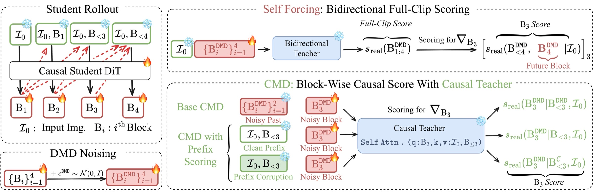

Picture a driving examiner. The usual one holds the whole route map and grades your turn at block 3 by where you must be at block 5, which you couldn't know. CMD's examiner looks through your own windshield, smudges included, and grades one turn at a time from the road you actually drove.
운전 시험관을 떠올려 보자. 보통의 시험관은 전체 경로 지도를 들고, 3번 블록에서의 회전을 5번 블록에 어디 있어야 하는지로 채점한다. 운전자는 그걸 알 수 없었는데도. CMD의 시험관은 운전자의 앞유리로, 얼룩까지 그대로 보며, 실제로 지나온 길만 가지고 회전 하나씩 채점한다.
How it works: give the teacher the student's view작동 방식: 교사에게 학생의 시야만 준다
The change from Self-Forcing is only what the teacher may see when it scores block 3. Self-Forcing's teacher also sees block 4; CMD's sees the input image and blocks 1–2.
Self-Forcing과 다른 점은 블록 3을 채점할 때 교사가 무엇을 볼 수 있느냐뿐이다. Self-Forcing의 교사는 블록 4도 보지만, CMD의 교사는 입력 이미지와 블록 1–2만 본다.

- Make the teacher causal.교사를 인과 모델로 만든다.Fine-tune Cosmos-Predict2.5-2B with Diffusion Forcing (each past frame noised independently); the student starts from these weights, no ODE or consistency warm-up.Cosmos-Predict2.5-2B를 Diffusion Forcing(과거 프레임마다 따로 노이즈를 넣는 학습)으로 미세조정한다. 학생은 이 가중치에서 바로 시작하고, ODE·일관성 사전 단계는 없다.
- Roll out the student and cache its prefixes.학생을 굴리고 앞부분을 저장한다.The student generates frames exactly as at inference; each frame's clean history and camera commands are saved.학생은 추론 때와 똑같이 프레임을 생성하고, 각 프레임의 깨끗한 과거와 카메라 명령을 저장해 둔다.
- Score every frame in one masked pass.마스크 한 번으로 모든 프레임을 채점한다.A block-causal mask pairs each noised target with its own prefix, corrupted at noise step 256; real-minus-fake scores give the gradient.블록 인과 마스크가 노이즈 낀 각 목표를 자기 앞부분(노이즈 스텝 256으로 오염)과 짝짓는다. real 점수에서 fake 점수를 뺀 값이 기울기가 된다.
Key idea: matched context, but not too clean핵심: 맥락은 맞추되, 너무 깨끗하게는 말 것
The causal teacher does most of the work; clean prefixes alone hurt, and moderate noise on them wins. An early student's frames carry drift artifacts the teacher never saw in training.
대부분의 이득은 인과 교사에서 나온다. 깨끗한 앞부분만 쓰면 오히려 나빠지고, 적당한 노이즈를 넣어야 이긴다. 학습 초기 학생의 프레임에는 교사가 학습 중 본 적 없는 드리프트(누적 왜곡) 흔적이 있기 때문이다.
Results: control follows, and long videos move결과: 명령을 따르고, 긴 영상도 움직인다
CMD executes camera commands far better than other AR systems. Chunk-4's Hard-split rotation error is 38% below SANA-WM, the best baseline.
CMD는 다른 AR 시스템보다 카메라 명령을 훨씬 잘 수행한다. 청크 4 모델의 Hard 분할 회전 오차는 최고 기준선 SANA-WM보다 38% 낮다.
On 30-second rollouts CMD has the best Total, but it trades steadiness for motion. LongLive and Rolling Forcing look steadier mainly because they barely move.
30초 생성에서 CMD는 Total이 가장 높지만, 안정성을 내주고 움직임을 얻는다. LongLive와 Rolling Forcing의 일관성 점수가 높은 건 대체로 화면이 거의 움직이지 않기 때문이다.
| Method방법 | Total | SC | DD |
|---|---|---|---|
| LingBot-World | 69.03 | 91.00 | 51.25 |
| LongLive | 68.80 | 95.43 | 8.75 |
| Rolling Forcing | 68.77 | 96.09 | 3.75 |
| Context Forcing | 69.25 | 91.72 | 32.50 |
| CMD c1 | 70.02 | 88.59 | 67.50 |
| CMD c4 | 69.57 | 86.97 | 77.50 |
When distilling any sequential generator, score the student on its own rollout with a teacher limited to the student's information set: the same lesson as on-policy distillation for LLMs. Lightly noise the student's history so early drift doesn't corrupt the grade.순차 생성 모델을 증류할 때는, 학생이 직접 생성한 결과를 학생이 가진 정보만 보는 교사로 채점하라. LLM의 온폴리시 증류(학생 자신의 출력으로 배우는 증류)와 같은 교훈이다. 학생의 과거에는 살짝 노이즈를 넣어 초기 드리프트가 채점을 망치지 않게 하라.
Prefix Scoring adds little over Base CMD (88.33 → 88.46) and depends on the noise level; Base CMD has lower camera errors on Hard. Most baselines are T2V pipelines adapted by swapping in the input image; the perceptual study is a Gemini judge, and no latency is reported.Prefix Scoring은 Base CMD보다 이득이 작고(88.33 → 88.46) 노이즈 수준에 민감하며, Hard 분할에서는 Base CMD의 카메라 오차가 더 낮다. 기준선 대부분은 T2V(텍스트→비디오) 파이프라인에 입력 이미지를 끼워 넣어 I2V(이미지→비디오)로 바꾼 것이다. 지각 품질 평가는 사람이 아니라 Gemini 판정이고, 지연 시간은 보고하지 않는다.